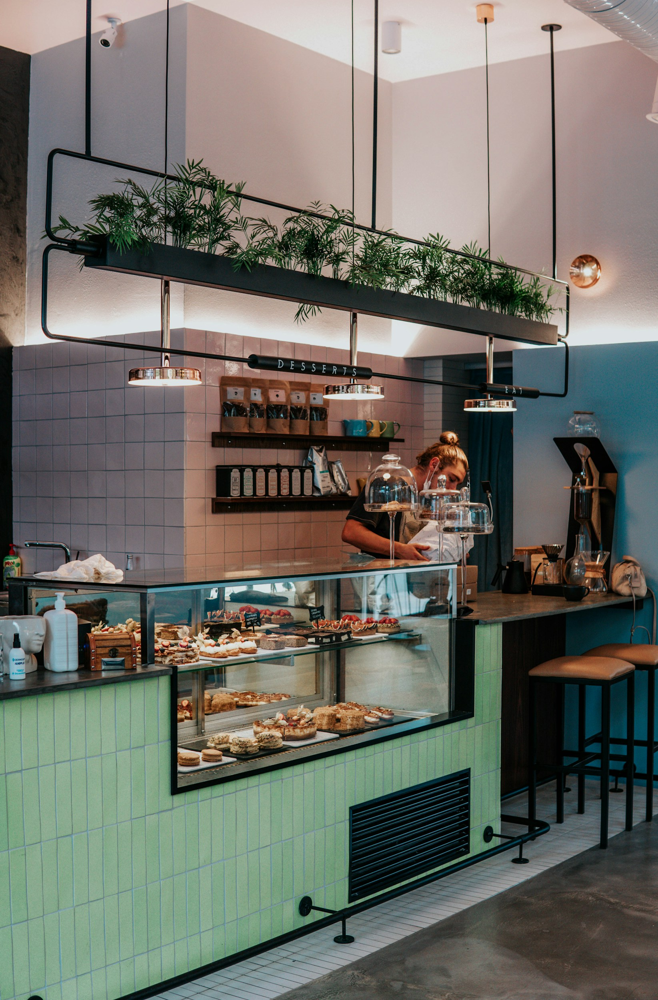
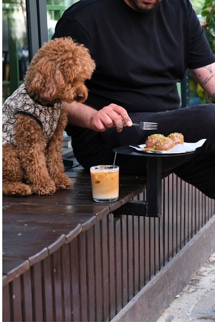
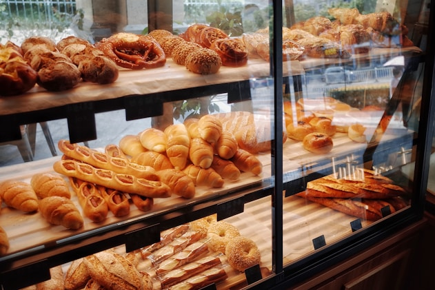
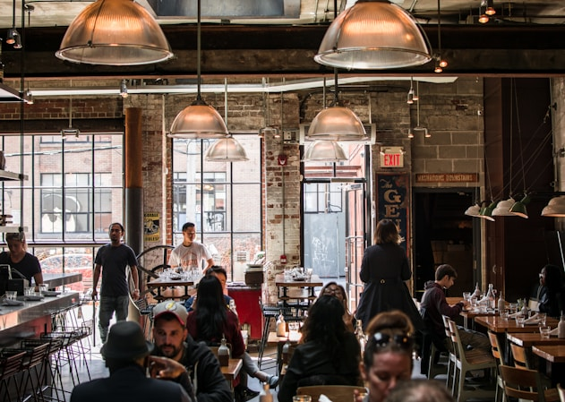
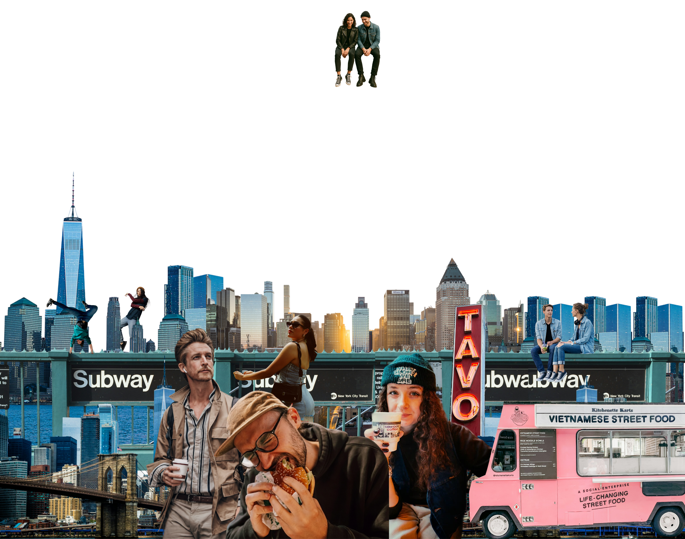

9.7 for Work friendly
Atly turns a craving, a specific need,
or a plan tonight into a shortlist
of places that actually fit.

9.7 for Work friendly

9.2 for Pets ok

9.8 for Gluten free eats

9.4 for Vegan brunch
9.4 for Date night
As seen on
One place. Different scores.
Atly does not flatten every place into one generic rating. A cafe can score high for cozy brunch and lower for getting work done, because the best place depends on what you need right now.
Millions of trusted signals
Atly analyzes reviews, comments, local posts, trusted creators, and real place context to explain why each spot matches your search, so every recommendation feels detailed, current, and earned.
Highlights that match your search
When you search for something specific, Atly shows the details that actually matter. Looking for a work-friendly cafe? See signals like Wi-Fi, quietness, plugs, seating, and laptop comfort, without digging through endless reviews.
Lists that match your taste
Atly turns local discovery into curated collections around real needs, moods, and moments. From Monday survival fuel to hidden date-night spots, each list is shaped around your interests, so the places feel picked for you.
